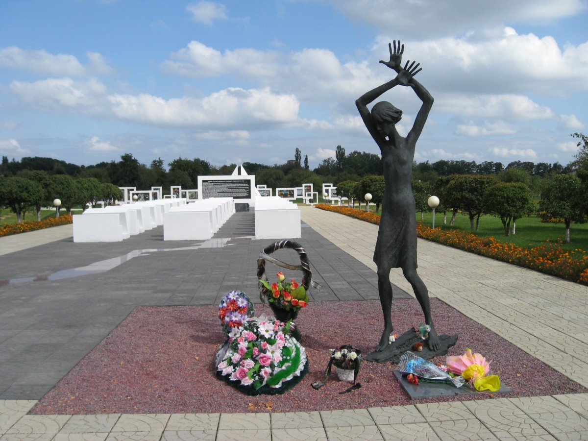
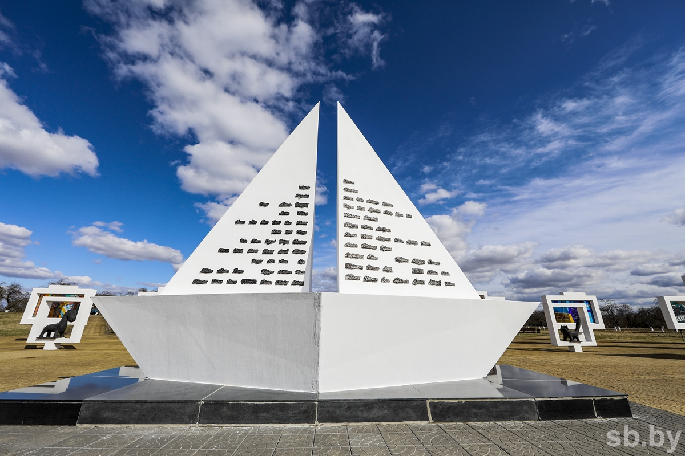

Концлагерь "Красный берег"


Детский концлагерь «Красный берег» — один из 14 «донорских пунктов»,
организованных немецкими оккупантами на территории Белоруссии. Малышей и
подростков силой отнимали у матерей, обследовали и брали кровь для
переливания раненым офицерам и солдатам Вермахта. Есть сведения, что
имевших первую группу и положительный резус-фактор подвешивали за руки,
надрезали вены на ногах и так «выкачивали» досуха. Дети засыпали и умирали
во сне, их тела сжигали. Уцелевших отправляли на каторгу в Германию, 15
человек выжили, остальные 1990 бесследно исчезли. Появились даже
публикации, где утверждается, будто здесь был «всего лишь» сборный пункт,
откуда детей распределяли по госпиталям, а там уже превращали в доноров. В
одном только латышском Саласпилсе получили 3000 л крови, по белорусским
лагерям статистики нет. Большинство жертв, обладавших нужной группой и
резус-фактором, были девочки. Поэтому у входа в мемориал посетителей
встречает трогательная девичья фигурка со скрещенными над головой руками.
За ее спиной «Мертвый класс», стилизованные парты из белого бетона, перед
ними черная доска с текстом письма Кати Сусаниной, принявшей смерть на
фашистской каторге в Германии. По серым плитам струится ручей из
кроваво-красного полированного гранита. На обратной стороне доски — карта
Белоруссии, где обозначены все 14 лагерей медленной смерти. Аллея ведет
дальше к белому кораблику, на чьих парусах написаны детские имена из
архивных документов. За ним в огромных бетонных рамах установлены витражи
по картинкам, нарисованным белорусскими детьми в 1946 г. Одна из них
принадлежит Леониду Левину, главному архитектору мемориала, которому тогда
было всего 11 лет.